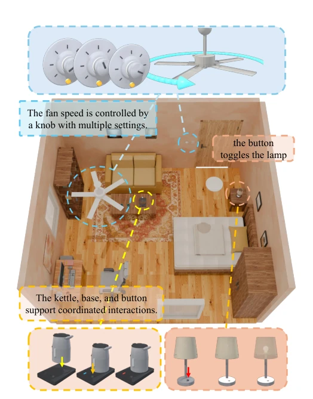
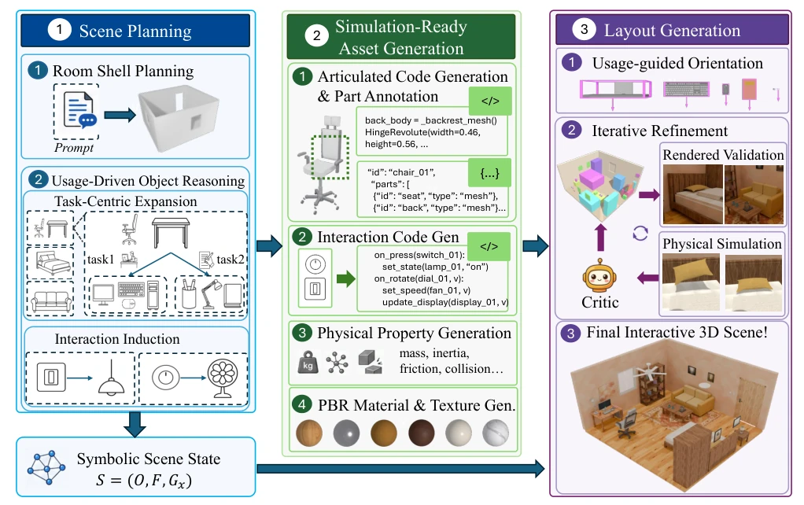
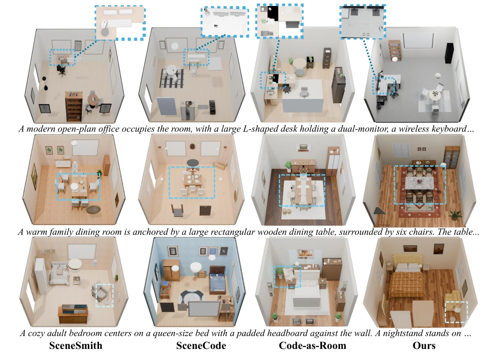
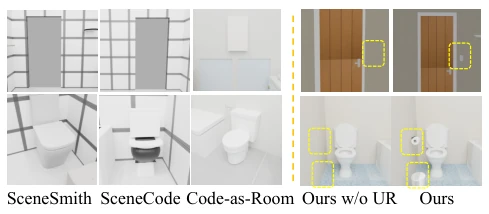
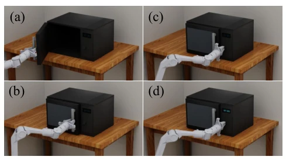
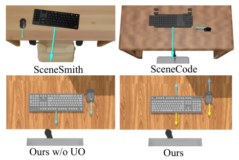
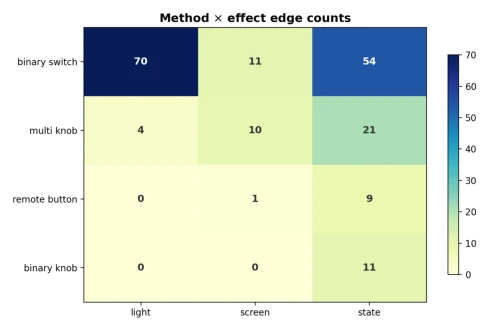
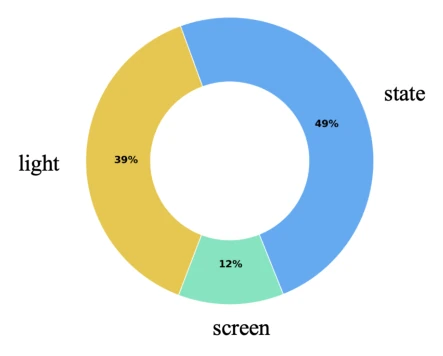
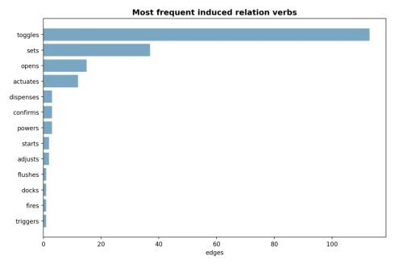
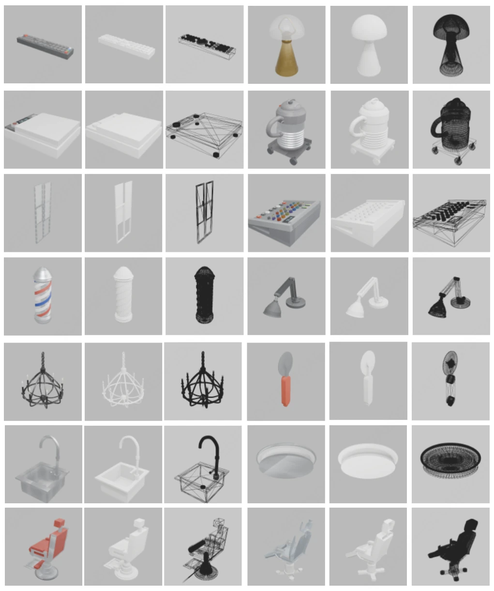

Beyond Placement and Articulation: Usage-Driven Code Scenes for Embodied Interaction
Zijian Xiao, Zipeng Ye, Jinkun Hao, Xiong Yang, Yuchen Xie, Ran Yi abspdf
论文点评Review
代码生成 3D 场景最近很火，但大多停留在“画得好看”和“关节能动”的层面。RoomWright 试图把场景变成可执行的代码，这思路很性感。它强调“使用驱动”，不只是摆家具，还要考虑怎么用。比如开关灯、旋钮调速，这些因果交互被编译成规则。不过，依赖大模型做物理逻辑推理，稳定性是个隐患。虽然号称仿真就绪，但代码生成的物理参数是否真的能骗过 Isaac Sim 的碰撞检测？实验数据看着不错，但交互复杂度是否真的比 SceneCode 高很多，还是只是规则写得更细？总之，这是给具身智能喂了个“可调试”的模拟器，但调试成本可能比训练策略还高。
Code generation for 3D scenes has recently become very popular, but most remain at the level of "looking good" and "articulated movement". RoomWright attempts to turn scenes into executable code, a concept that is very compelling. It emphasizes "usage-driven", not merely placing furniture, but also considering how to use it. For instance, turning lights on/off, knob speed adjustment; these causal interactions are compiled into rules. However, relying on large models for physical logic reasoning poses a stability risk. Although claimed to be simulation-ready, can the physics parameters generated by code truly pass Isaac Sim's collision detection? The experimental data looks promising, but is the interaction complexity really much higher than SceneCode, or just more detailed rules? In short, this feeds embodied intelligence a "debuggable" simulator, but the debugging cost may be higher than training policies.
研究动机Motivation
现有室内场景合成方法（如 SceneCode, Code-as-Room）主要关注视觉构建和物体级 articulation（如开门），忽略了场景的功能性使用（Yang et al. 2026b; Wang et al. 2026）。对于具身 AI 和策略学习，静态几何或简单关节无法支持复杂的因果交互。例如，按开关灯、水壶放底座充电，这些跨物体的因果依赖未被建模。这导致生成的环境缺乏功能性，机器人无法执行基于任务的操作。因此，需要一种能建模“场景实际如何使用”的框架，支持可编辑、可执行的代码场景。
Existing indoor scene synthesis methods (e.g., SceneCode, Code-as-Room) primarily focus on visual construction and object-level articulation (e.g., opening doors), ignoring the functional usage of scenes (Yang et al. 2026b; Wang et al. 2026). For embodied AI and policy learning, static geometry or simple joints cannot support complex causal interactions. For example, pressing a switch to turn on lights, placing a kettle on a base to charge; these cross-object causal dependencies are not modeled. This results in generated environments lacking functionality, preventing robots from executing task-based operations. Therefore, a framework capable of modeling "how scenes are actually used" is needed, supporting editable, executable code scenes.

Figure 1: The scenes automatically generated by RoomWright. Each object in the scene is independently sep- arable and possesses its own articulation structure, while different parts of an object, and even multiple objects, ex- hibit rich coordinated interactions. The objects, the scene layout, and all interaction behaviors are represented entirely as code.
RoomWright comprises three stages: scene planning, simulation-ready asset generation, and layout generation. First, Usage-Driven Object Reasoning converts room descriptions into symbolic states S=(O, F, Gx), performing task-centered expansion centered on ground anchors to infer necessary objects and interaction relationships. Second, Asset Generation uses Articraft to generate code assets with physical properties, and compiles interaction graphs into trigger-condition-effect rules, supporting multi-part collaboration. Finally, Layout Generation converts symbolic layouts in the user reference frame into collision-free poses via a geometric solver, and introduces a visual Critic for iterative optimization. Innovations lie in: 1) Usage-driven reasoning, avoiding blind placement; 2) Code-based multi-part interaction, surpassing single joints; 3) Usage-oriented orientation based on semantic annotation at modeling time, solving manipulation object direction ambiguity.

Figure 2: Pipeline overview of RoomWright. Starting from a natural-language room description, RoomWright build an interactive 3D scene through three stages: (1) scene planning infers a usage-driven symbolic scene state with object, support, and interaction relations; (2) simulation-ready asset generation produces simulation-ready articulated assets with semantic parts, physical properties, and executable interactions; (3) layout generation optimizes object placement through geometric reasoning, visual critique, and physical simulation. The generated scene is directly executable in embodied environments.
Evaluated using 28 room prompts of varying difficulty. Baselines include SceneCode, Code-as-Room, SceneSmith. Metrics cover SceneEval's geometry metrics (collision, navigation) and interaction metrics (IO, AO, CHI, MPC). Results show RoomWright significantly outperforms baselines in interaction object count and complex interaction types (Table 2). Ablation studies indicate that removing usage-driven reasoning leads to missing functional objects (Figure 5), and removing usage-oriented orientation leads to keyboard/mouse placement errors (Figure 6). Visual comparison shows its layout rationality is higher (Figure 3).

Figure 3: Qualitative comparison of the four methods. RoomWright produces layouts with better plausibility than the baselines, and achieves highly realistic visual quality even though it relies entirely on code, without any 3D generation or asset retrieval.

Figure 5: Qualitative comparison with and without usage- driven object reasoning (UR in the figure).

Figure 4: Simulation of generated interactions. (a)(b) The gripper grasps the handle and closes the revolute door. (c) The arm approaches the button while the display remains off. (d) Pressing the button lights up the display, demonstrating a causal interaction.

Figure 6: Comparison of manipuland placement with and without usage-guided orientation (UO in the figure).
其他图片Other Figures

Figure 7: Method × effect distribution of the non-contact interaction edges across 23 scenes.

Figure 8: Effect-channel share over all inferred edges.

Figure 9: Most frequent induced relation verbs over the 194 edges.

Figure 10: Demo of Objects with Complex Interactions